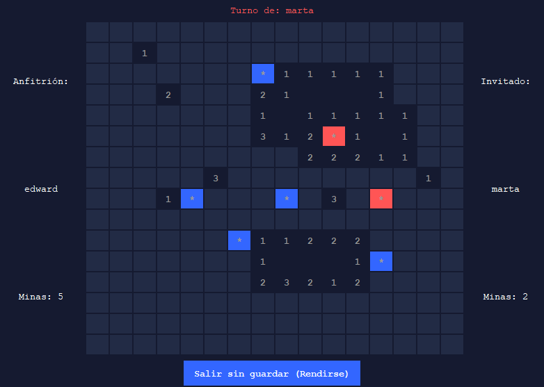

Buscaminas Clásico
Implementación en Java con Interfaz Gráfica (Swing)

Sobre el Proyecto
El clásico juego del Buscaminas desarrollado íntegramente en Java. Este proyecto sirve como una excelente demostración de programación orientada a objetos (POO), manejo de eventos e interfaces gráficas en Java.
Características Principales
- Lógica de Juego: Generación aleatoria de minas y cálculo de números adyacentes.
- Interfaz Gráfica (GUI): Construida con Java Swing, implementando un diseño de cuadrícula interactiva.
- Recursividad: Algoritmo recursivo para descubrir múltiples casillas en blanco cuando el jugador hace clic en zonas seguras.
- Estados de Juego: Gestión completa de partida ganada, perdida y reinicios.
Desarrollo y Aprendizaje
La implementación de la lógica detrás del despeje de casillas (flood-fill) supuso un excelente caso de uso práctico para algoritmos recursivos y matrices bidimensionales. Además, separar la lógica pura (el modelo de datos) de la lógica visual (los paneles y botones de Swing) garantizó un código limpio, estructurado y fácil de mantener.